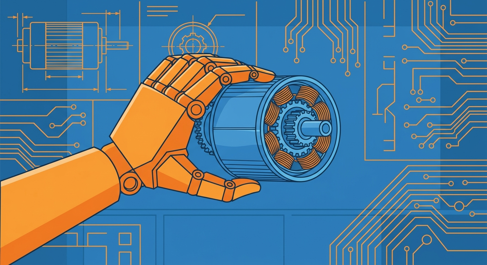

行业热点
小米YU7 GT 38.99万起售，刷新纽博格林北环SUV圈速纪录
来源：机器之心 · 2026年5月22日
小米YU7 GT以38.99万元起售价正式发布，同时以刷新纽博格林北环赛道SUV圈速纪录引发行业震动。从手机到汽车再到智能制造，小米的硬件制造能力再上新台阶，标志着中国汽车在性能领域的重大突破。
查看原文 →小米YU7 GT刷新纽北SUV纪录；全球首个全自动AI科学家Robin登Nature；xAI Grok V9-Medium 1.5万亿参数训练完成；蚂蚁百宝箱一键生成企业级智能体。
小米YU7 GT以38.99万元起售价正式发布，同时以刷新纽博格林北环赛道SUV圈速纪录引发行业震动。从手机到汽车再到智能制造，小米的硬件制造能力再上新台阶，标志着中国汽车在性能领域的重大突破。
查看原文 →
历经898天攻关，国产空心杯电机实现关键技术突破，打破瑞士Maxon、日本Nidec等海外长期垄断。空心杯电机是人形机器人灵巧手的核心驱动部件，直接决定手指灵活度与触觉反馈精度，此次突破为人形机器人国产化扫清关键障碍。
查看原文 →蚂蚁灵波公司研发的LingBot-VA机器人论文被机器人领域顶级学术会议RSS 2026接收，展示了中国科技企业在具身智能学术研究方面的突破性进展，也验证了企业实验室在基础研究中的日益重要角色。
查看原文 →高德地图推出"问店选址"AI技能，以Skill形式接入钉钉AI助手"悟空"。商家可通过自然语言对话完成商圈分析、客流评估和选址决策，将原本需要专业团队完成的选址工作平民化，大幅降低开店门槛。
查看原文 →谷歌针对AI生成内容泛滥问题推出GEO（生成引擎优化）垃圾内容治理方案，系统性打击利用AI批量生产低质SEO内容的行为。此举旨在推动搜索生态向高质量内容回归，维护互联网信息环境的可信度。
查看原文 →福建漳州试点"一人公司"创业模式，结合AI工具与OPC（一人有限公司）制度，让创业者借助AI能力实现"一个人就是一家公司"的新型商业形态。这是AI时代创业制度创新的有益探索，为个体创业者提供了全新的商业组织形态。
查看原文 →
全球首个全自动AI科学家系统Robin登上Nature，能够独立完成从文献综述、假设提出、实验设计到论文撰写的全流程科研工作。这标志着AI从科研助手向独立科学家的历史性跨越，对科学研究的未来具有深远影响。
查看原文 →
OpenAI模型成功证明著名数学家Paul Erdős提出的组合数学猜想，这是AI在纯粹数学领域取得的又一里程碑式成果。该突破展示了大模型在形式推理方面的强大潜力，为AI辅助数学研究开辟了新路径。
查看原文 →
北京大学联合阿里巴巴达摩院利用AI技术首次实现中国风电和光伏发电装机容量的全国普查，研究成果登上Nature。该方法结合卫星遥感与深度学习，为新能源规划提供了前所未有的精准数据支撑。
查看原文 →• LeRobot - HuggingFace开源具身智能机器人学习框架 [GitHub] | [HuggingFace]
• Protenix - 开源蛋白质结构预测工具 [GitHub] | [HuggingFace]
• ESM-2 - Meta开源蛋白质语言模型 [GitHub] | [HuggingFace]
• OpenStreetMap - 开源地理数据平台 [GitHub]
xAI宣布Grok V9-Medium模型训练完成，参数规模达1.5万亿，在多项基准测试中表现优异。该模型的发布进一步加剧了大模型领域的竞争格局，万亿参数正成为新一代旗舰模型的标准门槛。
查看原文 →面壁智能联合清华大学发布1.58-bit量化大模型BitCPM-CANN，在保持模型性能的前提下将参数位宽压缩至极限，大幅降低推理计算和存储成本，为大模型在手机、IoT等边缘设备上的部署铺平道路。
查看原文 →
DeepSeek宣布V4模型API永久降价75%，继续以极致性价比策略冲击大模型市场。此举预计将引发新一轮行业价格战，加速大模型从高端应用向普惠化发展，让更多中小企业用得起顶级AI能力。
查看原文 →蚂蚁集团发布"百宝箱"平台，用户无需编程即可一键生成企业级AI智能体，支持多场景业务流程自动化。该平台大幅降低Agent开发门槛，让每个企业都能快速拥有自己的AI数字员工。
查看原文 →viaim联合科大讯飞发布智能体耳机产品，将AI Agent能力嵌入可穿戴设备。支持实时语音翻译、智能会议纪要、AI助手交互等功能，开启Agent硬件化新赛道，让智能体真正伴随用户随时随地工作。
查看原文 →AnySearch推出基于Agent架构的新一代搜索引擎，突破传统关键词匹配模式，通过多轮推理和自主决策实现精准信息检索。该产品重新定义了AI时代的搜索体验，被业内视为搜索引擎下一代演进方向。
查看原文 →• DeepSeek-V4 - 开源大语言模型 [GitHub] | [HuggingFace]
• BitCPM - 面壁智能低比特量化模型 [GitHub] | [HuggingFace]
• Dify - 开源LLM应用开发平台 [GitHub] | [HuggingFace]
• OpenHands - 开源AI Agent编码平台 [GitHub]